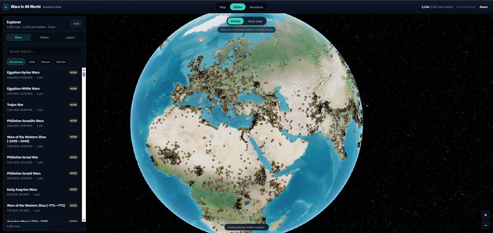

Wars In All World
Interactive research atlas of recorded wars — Map, Globe, and Numbers views over geocoded records from HCED, Correlates of War, War Atlas, and UCDP GED.
Python ETL
Leaflet + Cesium
No formal paper yet
Research focus: How filtering, era windows, and spatial coverage tiers change what a conflict atlas appears to show — with honest gaps when battle geography is missing from the sources.